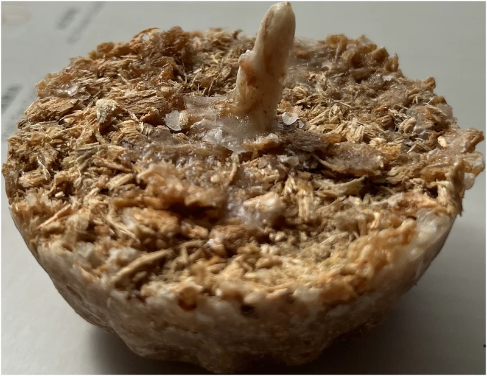
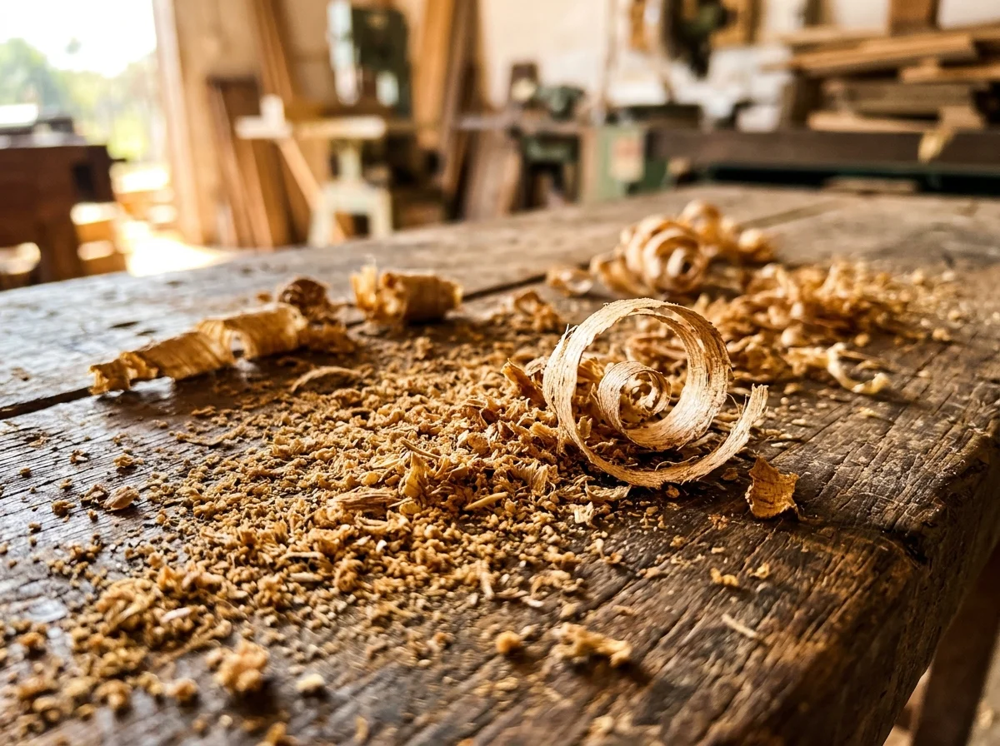
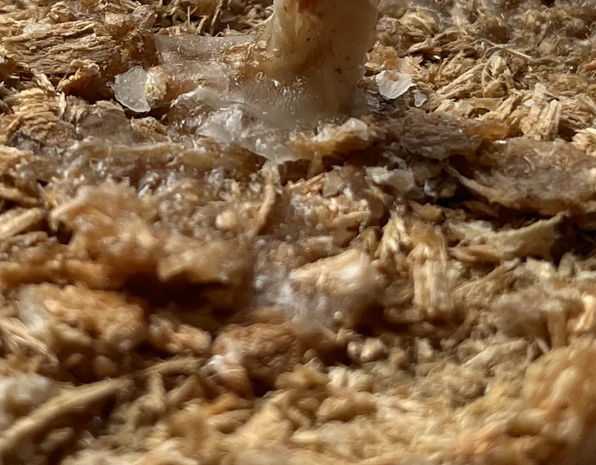
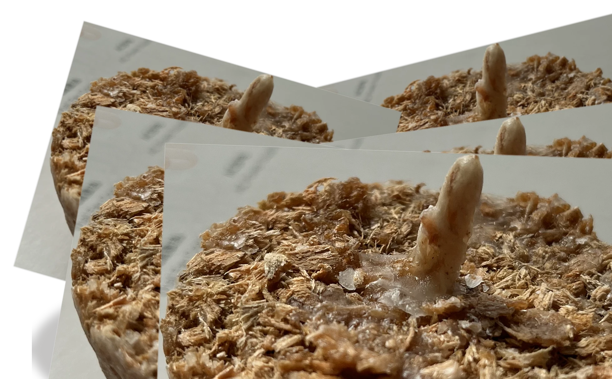
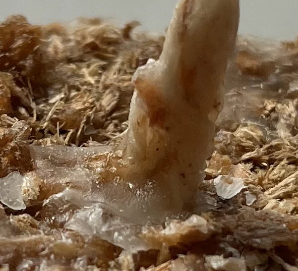
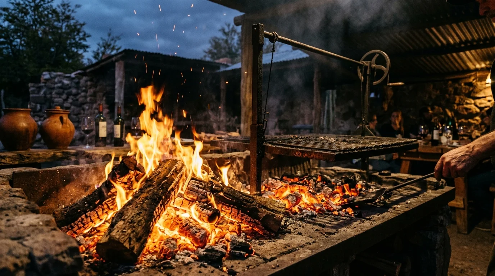

El origen de un buen fuego.
Iniciadores de fuego artesanales. De Misiones, Argentina, para el mundo.

Naturalmente artesanal.
“Elaborados a base de aserrín de madera ecológica, nuestros iniciadores representan una propuesta artesanal nacida en Misiones, Argentina.”
Transformamos la viruta y el aserrín fino de madera seleccionada en una solución limpia, potente y 100% natural. Sin derivados de petróleo ni aromas químicos que alteren el sabor de tus alimentos.
Madera Ecológica
Aprovechamiento sustentable de aserraderos locales de Misiones, respetando el ciclo del monte.
Cero Químicos
Combustión limpia que no deja residuos tóxicos ni olores desagradables en brasas ni carnes.


Diseñadas para encender a la primera.
Una sola pastilla de aserrín Biofuego enciende el carbón o la leña más dura sin soplar, sin alcohol y sin complicaciones.


Mecha de Encendido Rápido
Algodón natural tratado que asegura una ignición inmediata en cualquier condición climática.
Aserrín Prensado de Calidad
Compactación homogénea que asegura una combustión gradual, uniforme y libre de desgranamiento.

Brasas Perfectas
20 minutos de llama sostenida que encienden el quebracho, espinillo o carbón vegetal sin esfuerzo.
De Misiones para el mundo.
Misiones es tierra colorada, monte verde y el corazón forestal de la Argentina. De esta tierra noble surge Biofuego: un producto artesanal nacido del respeto por la madera y la pasión por el fuego compartido.
Cada iniciador Biofuego se elabora en nuestra provincia aprovechando el aserrín fino de maderas ecológicas seleccionadas. Damos nueva vida al residuo noble del aserradero, cerrando el ciclo productivo con un artículo sustentable, práctico y de exportación.
Respaldados por la trayectoria de Maderera Ferrari, combinamos conocimiento del bosque, tradición maderera y procesos artesanales minuciosos para llevar un fuego genuinamente argentino a cada rincón del país y del mundo.
Conocé Biofuego.
¿Querés tener Biofuego en tu casa, quincho o comercio? Hacemos envíos y atendemos consultas minoristas y distribuidores mayoristas de todo el país.
Maderera Ferrari · Misiones, Argentina · Atención personalizada.
Armá tu pedido rápido
Seleccioná la cantidad de packs que deseás y envianos tu solicitud en un clic.